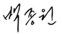
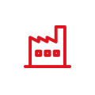
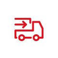

안녕하세요! 백종원입니다.
음식에 대한 끊임없는 관심과 탐구를 목표로 삼는 사람,
음식에 있어서 만큼은 누구보다도 더 많은 걸 알고 싶은 사람 ‘백종원’
그것이 지금의 저이고, 앞으로도 바라는 저의 모습입니다.
지금까지도 저는 고객들의 행복한 표정을 그리며 머리속으로
수십개의 식당을 세웠다가 허물기를 반복합니다.
어떤 음식을 선보일까, 어떤 컨셉을 고객들이 좋아할까,
이런 고민을 하는 것이 즐겁습니다.
여태껏 선보인 브랜드보다 앞으로 펼쳐질 브랜드가 많기에
오늘도 저는 맛있는 고민을 합니다.
맛에 기본을 둔 브랜드! 더본의 앞날을 기대하셔도 좋습니다.
대표이사 
세계 곳곳에 한식을 알리고 있습니다.
국내외 20여개 브랜드, 2,700여개의 직/가맹점을 운영 중인 자타공인 글로벌 외식 기업 THEBORN.
THEBORN은 미국, 중국, 일본, 싱가포르, 인도네시아, 말레이시아, 필리핀, 베트남 등 세계 각 지역에 진출하여 한식의 우수함을 전파하고 있습니다.
-

생산관리 시스템
‘맛의 기본은 신념과 정성’이라는 이념 하에 높은 기준의
관리시스템을 도입해 체계적으로 고품질의 상품을 생산하며
본사 생산 공장과 외주 전문 생상 공장과의 협업으로
전문성과 효율성 모두 갖추고 있습니다. -

통합물류 시스템
자체 개발한 통합공급망관리시스템(SCM)인
TTMS(THEBORN Total Management System)로
최적의 물류서비스를 제공, 전국 5개 물류센터에서
365일 신선한 재료를 배송 받을 수 있습니다. -
조리개발 R&D
백종원 대표의 20여 년간의 메뉴 개발 경험과 노하우를 바탕으로
운영되는 전문 R&D 조직은 신 메뉴 개발과 맛의 표준화를 위한
소스 개발, 상품 품질평가와 검수 관리를 통해
메뉴 품질 향상에 최선을 다합니다. -
마케팅 인프라
브랜드의 새로운 소식과 다양한 프로모션을
지면·언론 홍보 뿐만 아니라 멤버십 앱(빽다방), 공식 홈페이지,
SNS 등 자사 미디어와 마케팅 채널을 적극적으로 활용해
온·오프라인 마케팅을 동시 지원합니다.